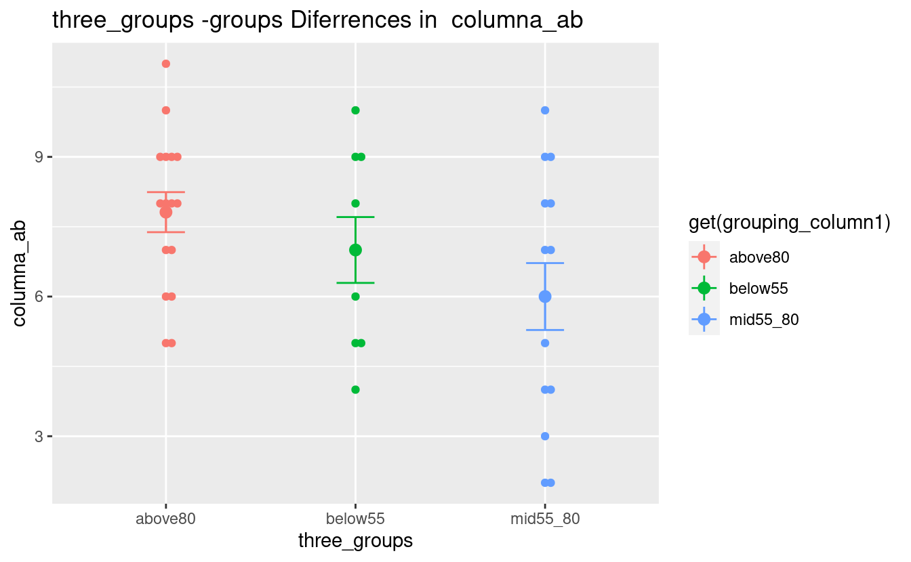
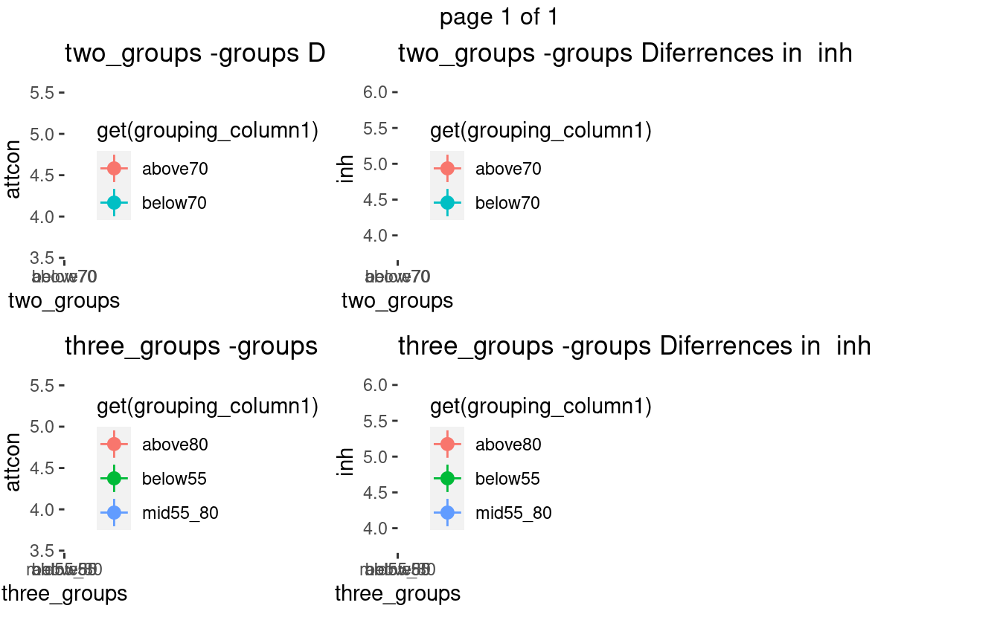
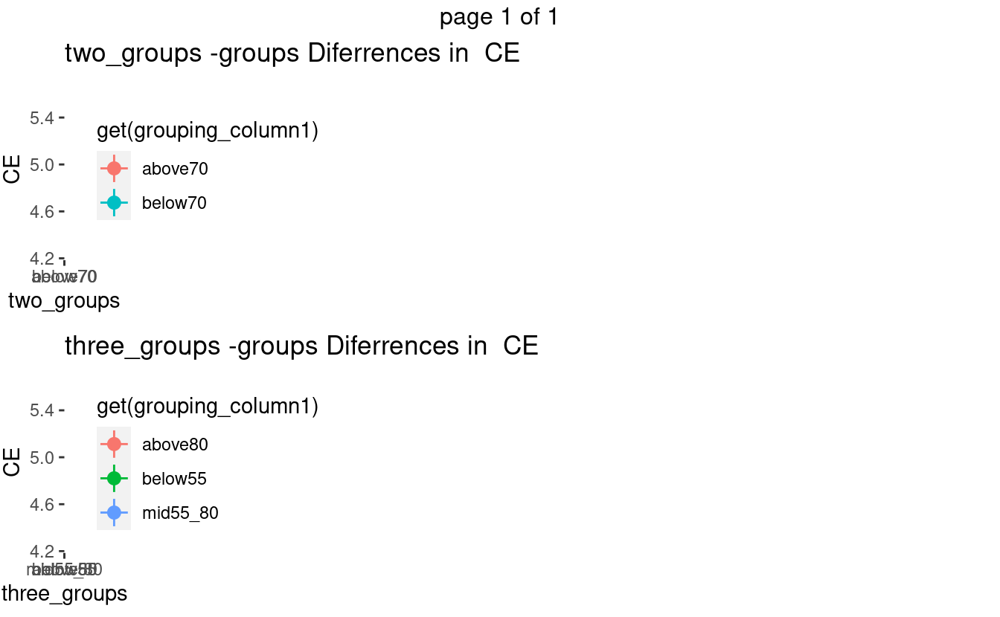

Significant differences among groups
Divided by percentiles
- Two groups above and below 70 percentile
- Three groups with 55 and 80 percentiles
Percentile-groups Differences in Raven
#> $columna_ab
#> $columna_ab$three_groups
#> .xmid55_80
#> 0.03065915
#>
#>
#> [1] "columna_ab three_groups"
#> [[1]]
Percentile-groups Differences in Subdimensions
#> $attcon
#> $attcon$two_groups
#> [1] 0.02067217
#>
#> $attcon$three_groups
#> .xbelow55
#> 0.04079459
#>
#>
#> $inh
#> $inh$two_groups
#> [1] 0.009151812
#>
#> $inh$three_groups
#> .xmid55_80
#> 0.02160658
#>
#>
#> [1] "attcon two_groups"
#> [1] "attcon three_groups"
#> [1] "inh two_groups"
#> [1] "inh three_groups"
Percentile-groups Differences in the three broad dimensions
#> $CE
#> $CE$two_groups
#> [1] 0.0034092
#>
#> $CE$three_groups
#> .xbelow55
#> 0.04419433
#>
#>
#> [1] "CE two_groups"
#> [1] "CE three_groups"
Results from Analysis of Differences Among Groups
- Categorical Variables are used as predictors
- Torrance Numeric Variables are used as responses
Torrance Percentiles
- Only marginally significant, p < 0.10, differences
#> $perc_originalidad
#> $perc_originalidad$grupo
#> as.factor(.x)2 as.factor(.x)4
#> 0.05038873 0.07281470
#>
#> $perc_originalidad$edad
#> as.factor(.x)8
#> 0.09000819
#>
#> $perc_originalidad$rango
#> as.factor(.x)4
#> 0.06297054
#>
#>
#> $perc_fluidez
#> $perc_fluidez$grupo
#> as.factor(.x)4
#> 0.08970761
#>
#> $perc_fluidez$edad
#> as.factor(.x)8
#> 0.06581025
#>
#> $perc_fluidez$rango
#> as.factor(.x)4
#> 0.0980242
#>
#>
#> $perc_flexibilidad
#> $perc_flexibilidad$edad
#> as.factor(.x)8
#> 0.08573308
#>
#>
#> $perc_creatividad
#> $perc_creatividad$rango
#> as.factor(.x)4
#> 0.050447Torrance Partials
#> $elab1
#> $elab1$grupo
#> as.factor(.x)4
#> 0.04169034
#>
#>
#> $orig2
#> $orig2$rango
#> as.factor(.x)4
#> 0.02103123
#>
#>
#> $flui2
#> $flui2$rango
#> as.factor(.x)4
#> 0.009731103
#>
#>
#> $orig3
#> $orig3$grupo
#> as.factor(.x)4
#> 0.01866077Torrance Totals (Aggregated Variables)
#> $originalidad
#> $originalidad$grupo
#> as.factor(.x)2 as.factor(.x)4
#> 0.03039469 0.03787579
#>
#> $originalidad$edad
#> as.factor(.x)8
#> 0.02026583
#>
#>
#> $fluidez
#> $fluidez$grupo
#> as.factor(.x)4
#> 0.03174777
#>
#> $fluidez$edad
#> as.factor(.x)8
#> 0.02982713
#>
#>
#> $creatividad
#> $creatividad$edad
#> as.factor(.x)8
#> 0.0246007